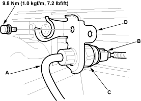
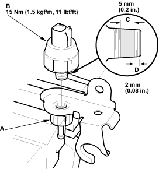

- Disconnect the vacuum hose (A) and 1P connector (B) from the vacuum switch (C).

- Remove the vacuum switch bracket (D).
- Securely clamp the joint (A) of the bracket in a vice. Remove the vacuum switch (B) from the bracket.

- Remove the old sealant from the threads in the joint. Apply new sealant to the threads of the switch on the shaded area (C) shown. Keep sealant off the fitting area (D).
- Install the new vacuum switch on the bracket and tighten it to specified torque.
- Install the vacuum switch in the reverse order of removal and note these items:
- Make sure the vacuum hose and wire harness connector properly connected.
- Release the parking brake lever fully and start the engine. Then stop the engine and turn the ignition switch ON (II). Check that the brake system indicator goes off.